Chris Ward took over as head coach for 2022 and the Mavericks delivered an impressive 18–7 record. Injuries again played their part — Sam Boylett was lost for the year in a pre-season game, Mat Strum also sidelined — but the team still scored 271 runs, 20 more than any other team in the pool.
Highlight of the season: Lewis Bawden threw a no-hitter against Richmond. The home record of 10–3 included two victories over eventual AA Champions Croydon (17–11, 9–3). The team ultimately finished two games behind Croydon, falling short in the final weekend.
10 pitchers combined for 186 strikeouts across 150 innings. Defensive fielding percentage: .919. Key batters: Diego Ansorena, Ed Ryan, Harvey Taylor.
Promoted to AA for the first time for development purposes, managed by Oona Ylinen and Kiwi. A young squad — intentionally developmental — resulted in multiple forfeits late in the season as the roster stretched thin. The intent was always player development toward Mavericks progression.
Pitching from Mike Payne, Kimi Hope, Oliver Wong, Patrick Bennett, Oona Ylinen. Notable batting contributions from Ben Burgess, Kiwi, Oliver Wong, and Jack Burdett.
Started 4–0 but finished last in Single-A. Hamish Carle delivered "outstanding pitching" with a "filthy curveball." Sam Beckwith hit two home runs in a single game against Herts Londoners. New players Ollie Shore and James Underwood adapted quickly. Described as "brilliantly fun season" despite standings finish.
Award data for the 2022 season is not currently in the club's archive.
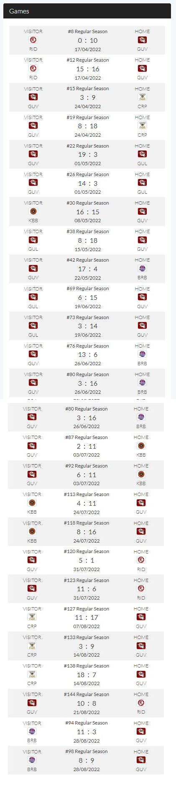
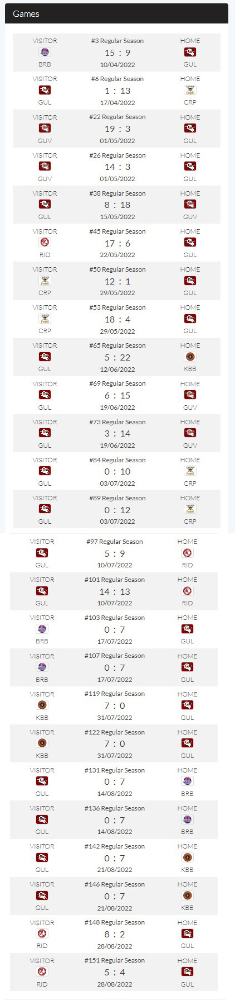
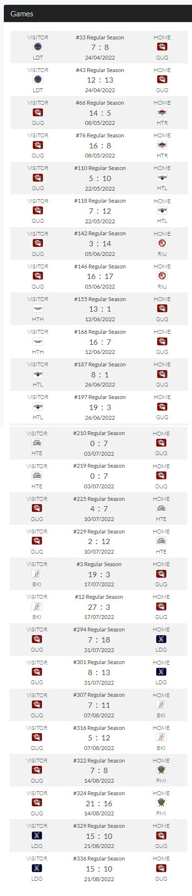
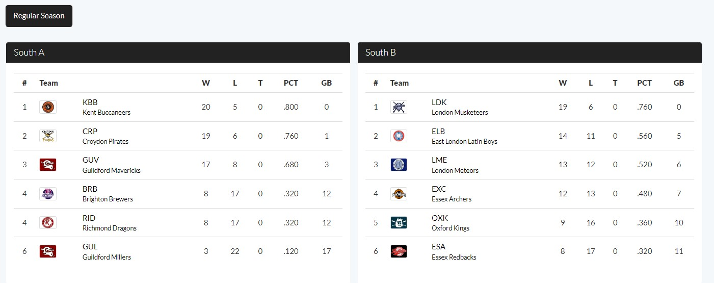
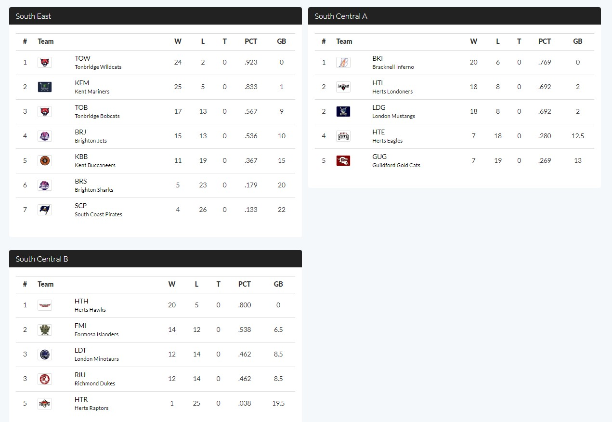
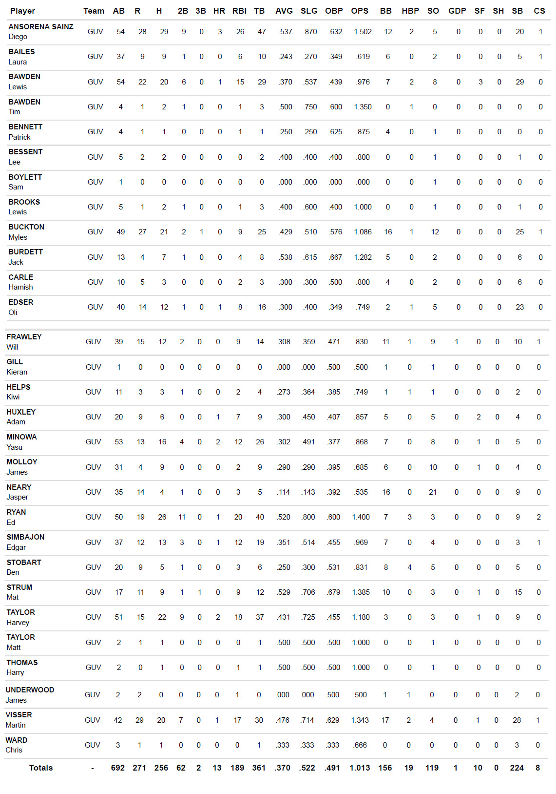
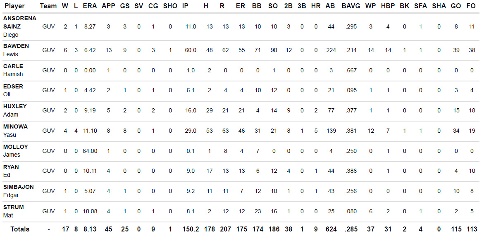
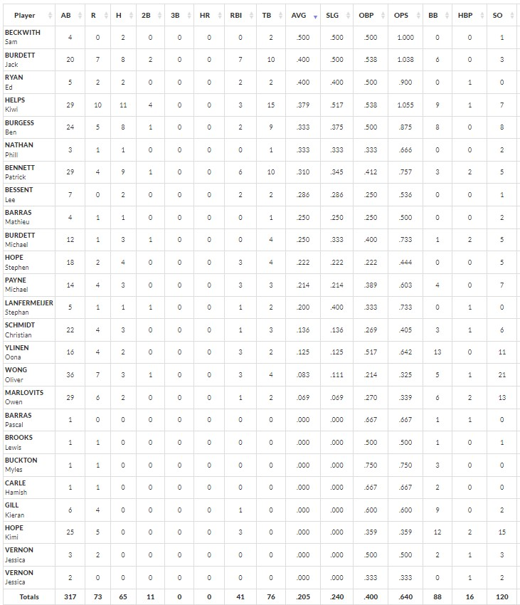
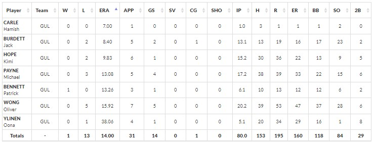
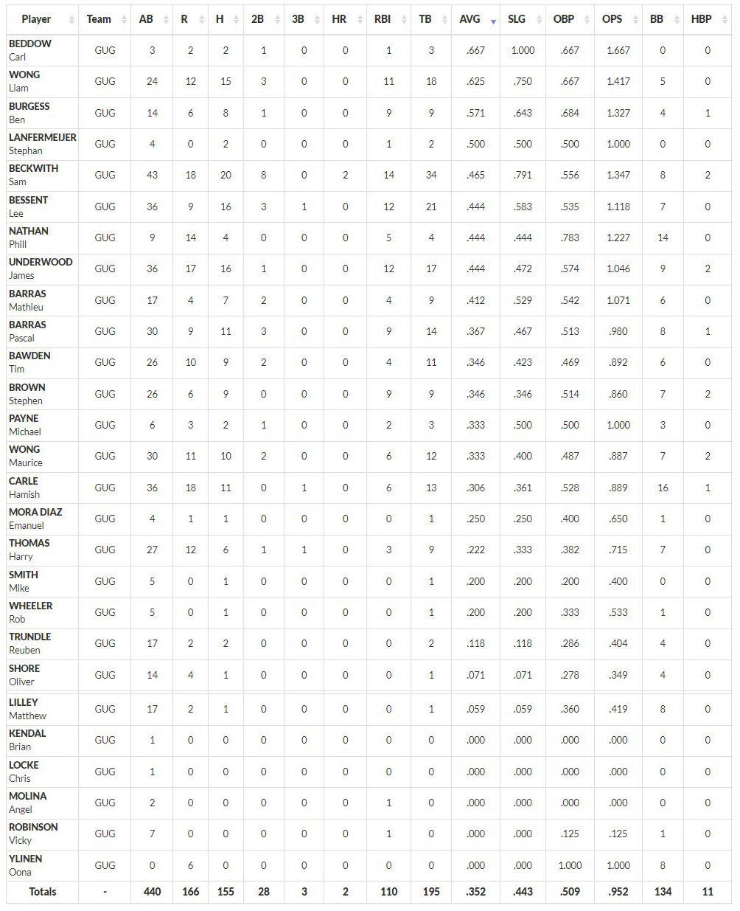
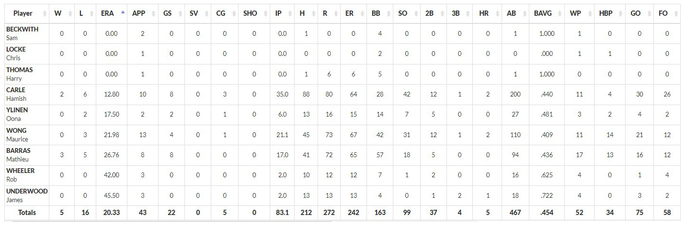